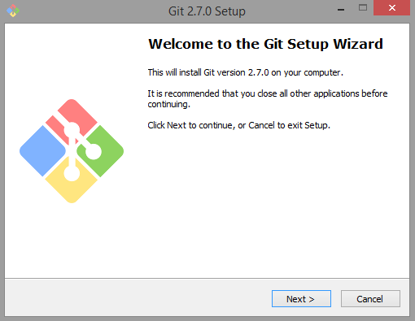
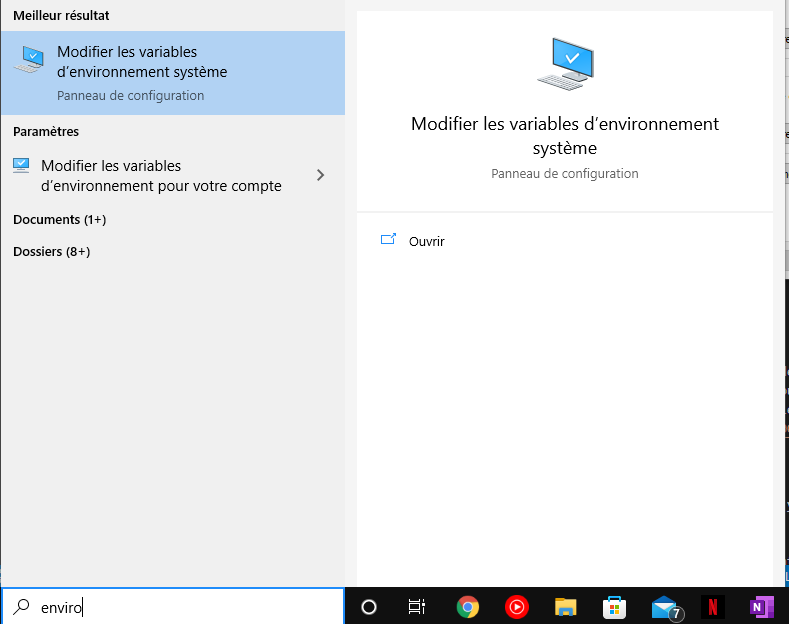
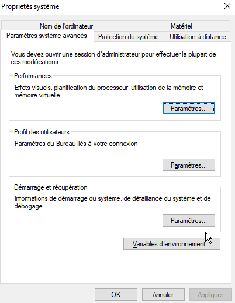
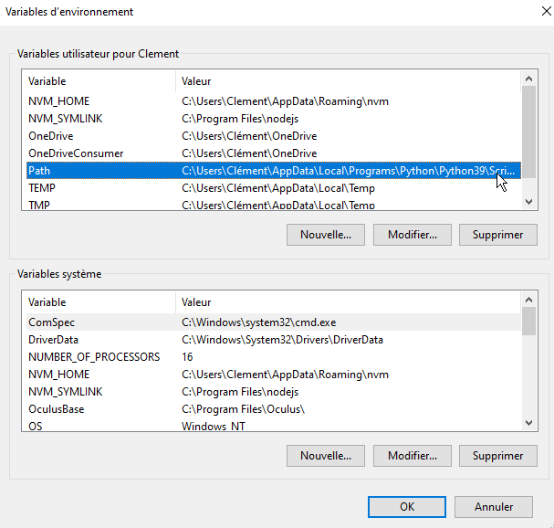
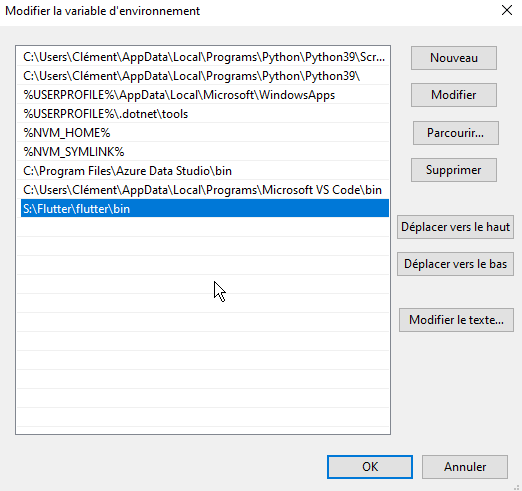
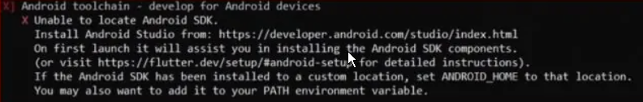
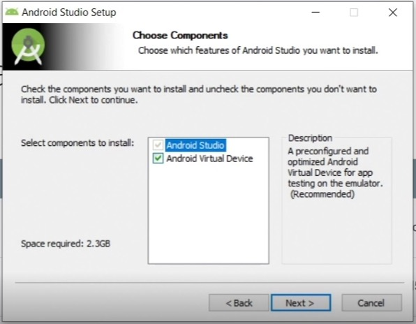

Accueil
!! ATTENTION !!
Ne surtout pas suivre pour ce projet. Cette méthode est présenté pour vous si vous souhaitez redévelopper du flutter dans un autre projet.
Nous passerons par un docker qui vous permetras de n'avoir rien à installer sur votre pc. Cela nous évitéra tous probleme de conflit entre les versions et permetras aussi un déploiement plus rapide.
Application mobile
- Getting Started
1 . Installation de GIT Bash
2 . Téléchargement du SDK Flutter
3 . Création de la variable d'environnement
4 . Installation du SDK d’Android via Android Studio
5 . Acceptation des licences et ajout des plugins
Getting Started
Pour pouvoir commencer à développer dans les meilleures conditions, plusieurs installations sont nécessaires. Cette documentation est réalisée pour Windows uniquement. En ce qui concerne Linux, il vous faudra suivre des tutoriels en ligne.
1. Installation de Git Bash

Vous pouvez taper git dans votre cmd pour vérifier la bonne installation.
2. Téléchargement du SDK Flutter.
Extraire le fichier zip et placez le contenu dans l'emplacement d'installation souhaité pour le SDK.
Attention !
N'installez pas Flutter dans un répertoire tel que C:\Program Files qui nécessite des privilèges élevés.
Vous pouvez aussi le télécharger via la commande dans votre cmd: git clone https://github.com/flutter/flutter.git -b stable. Le “-b stable” dans la commande peut se placer avant ou après.
3. Création de la variable d'environnement
Tapez flutter dans l’invite de commande.
Si c’est la première fois que vous installez Flutter, vous aurez un message vous expliquant que flutter n'est pas recoonu en tant que commande interne...
Flutter n’est pas reconnu car il faut installer la variable d’environnement. Pour ce faire, tapez « environnement » dans la barre de recherche du menu Démarrer. Cliquez sur « Modifier les variables d’environnement système ».

Cliquez sur le bouton variables d’environnement en bas à droite.

Vérifiez la précense de la variable Path.

Ensuite double-cliquez dessus pour ajoutez le lien vers le dossier « bin » de Flutter (vous trouverez ce dossier ou vous avez installer Flutter).

Fermer et rouvrir l’invite de commande puis taper “flutter”. si vous n'avez plus l'erreur arretez le cmd. Nous n'avons pas besoin de cette commande pour le moment.
4. Installation du SDK d’Android via Android Studio
Nous allons donc taper flutter doctor pour voir ce qu'il faut installer pour le bon fonctionnement de flutter.
Si vous obtennez cette erreur :

il faut telecharger android studio via ce lien.
Pendant l’installation, cochez bien Android Virtual Device pour obtenir un émulateur.

Une fois l’installation terminé, lancez Android Studio.
Selectionner « Custom » et non « Standard » dans la fenêtre « Install Type ».
Une fois terminer il faut accepter les licences.
5. Acceptation des licences et ajout des plugins
Pour accepter les licenses il vous faut taper la commande :
flutter doctor --android-licenses
Il faut ensuite valider plusieurs fois en tapant y pour valider.
En relancant la commande flutter doctor il ne devrait n'y a voir que deux problèmes lié à Android Studio.
Il faut installer les deux plugins Flutter et Dart pour Android Studio.
Attention !
N'installez les deux plugins que si vous comptez coder sous Android Studio.
Lancez Android Studio. Une fois sur la page de bienvenue il faut allez dans Configure puis dans Plugins.
Ensuite dans la barre de recherche des plugins, entrez Flutter puis Dart. Puis on redémarre Android Studio.
Télécharger Visual Studio Code si besoin puis lancez l’application et téléchargez les extensions Flutter et Dart. En téléchargeant l’extension Flutter, celle de Dart s’installe automatiquement.
Relancez une derniere fois la commande flutter doctor, normalement vous ne devriez plus avoir aucune erreur.